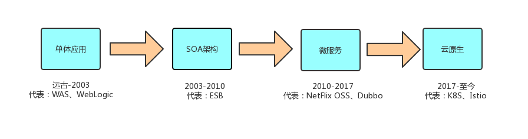
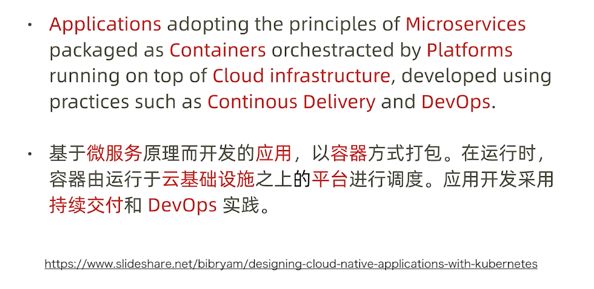
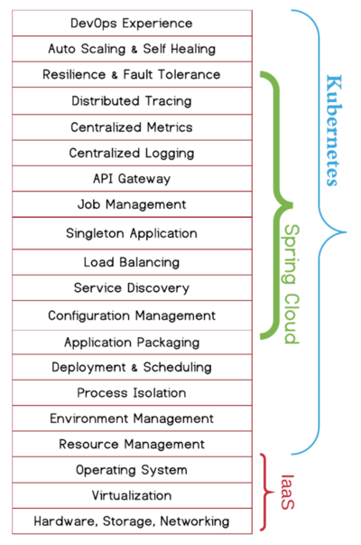

微服务架构被认为是构建大型复杂系统的最佳理论指导，其采用了分而治之、单一职责、关注点分离等方法论来设计系统架构。微服务的实现方式和思路有很多种，本文简述基于kubernetes的微服务平台建设思路及技术选型。
应用架构发展历史
要了解微服务架构提出的背景，首先我们来看一下应用架构的发展历程，如下图所示：
- 单体应用：传统应用的开发技术为.NET、J2EE等技术，开发完成后部署在websphere、weblogic这样的商业容器中（或者开源的tomcat）。应用间的交互一般通过CORBA、DCOM这样RPC风格的组件进行，此时并没有服务化的概念。部署的环境一般为小型机、服务器。
- SOA架构：业界在意识到了系统集成标准化的重要性后，提出了SOA的理念。SOA强调的是服务化、标准化，通过制定统一的应用接口标准，所有的应用都可以方便的提供服务，并且也可以快速调用其他应用提供的服务，通过一个集中化的服务中间件，系统集成的效率大大提高。经典的落地场景就是ESB企业服务总线。交互协议多用基于SOAP的web service。在这个时期，出现了虚拟化技术，应用可以部署在vmware虚拟机中，大大提高了资源的利用效率。
- 微服务：其实在martin fowler写那篇经典的微服务论述文章前，业界很多公司早就在实践微服务了。国外的有netflix oss技术栈，国内的有大名鼎鼎的dubbo框架。esb在落地过程中碰到了很多问题，集中化的中心节点很容易造成性能瓶颈，并可能产生单点故障，在互联网公司的实践中上千甚至上万的服务，已经不可能通过esb去承载。微服务与传统的esb区别就是去中心化，去掉了中心esb节点，取而代之的是一个分布式的服务化框架，提供服务注册、服务发现、限流熔断、配置管理等一系列高级功能。由于互联网的流行，此时的交互协议多为轻量级的RESTful风格协议。这个时期，是云计算真正落地的时期，以aws为代表的Iaas技术大行其道，从根本上改变了应用部署的方式。（事实上，netflix就是基于亚马逊的EC2弹性节点来动态的增加、减少微服务实例的，应用架构的灵活性大大增加）
- 云原生：云原生其实就是微服务的一种落地，但我认为，云原生已经可以看作是下一代的应用架构了。它从平台层面重新审视整个微服务实施中的关注点，并且以宏观视角给出了完整的解决方案，强调与devops的整合，整体抽象层次最高，且做到了语言无关，这是上一代微服务所做不到的。需要注意的是，在云原生时代，应用和基础架构需要进行深度集成，换句话说，只有你在kubernetes这样的云基础设施上部署的应用，才可以算成是“云原生”应用。应用充分利用了基础架构的能力（微服务能力），这才是“云原生”的真谛（天生被设计需要跑在云上的应用）。
云原生概念的提出可谓是业界对软件工程长期发展的一个高度总结和最佳实践集合，以下是红帽公司对于云原生概念的解释，个人是比较认可的
微服务解决方案
提到微服务，就不得不提到Spring Cloud和Kubernetes（太早的dubbo就忽略了），这两者社区都非常活跃，都有完整的微服务解决方案，有大量的落地案例。但他们解决问题的思路和方式完全不同，这也决定了两者未来的发展方向。这边进行一个全方位的对比，对比完之后你就知道，为什么kubernentes被称之为下一代的基础应用架构。
微服务公共关注点
首先我们来看下，红帽公司总结的所谓的微服务公共关注点。可以说，不管你用哪种方式、哪个平台去实现微服务，这些内容都是你必须要去关注并实现的。
可以看到，里面差不多一半关注点是和运维相关的。这么看来，似乎拿spring cloud和kubernetes比较有点不公平，spring cloud只是一个开发框架，对于应用如何部署和调度是无能为力的，而kubernetes是一个运维平台。也许用spring cloud+cloud foundry去和kubernetes比较才更加合理，但需要注意的是，即使加入了cloud foundry的paas能力，spring cloud仍然是“侵入式”的且语言相关，而kubernetes是“非侵入式”的且语言无关。
Spring Cloud 与 Kubernetes 功能对比
先来看下这张图。

可以说，spring cloud关注的功能是kubernetes的一个子集，下面来详细对比一下：
| 关注点 | Spring Cloud | Kubernetes |
|---|---|---|
| 自愈和自动伸缩 | 无 | kube-controller-manager |
| 调度和发布 | 无 | kube-scheduler+Deployment |
| 配置管理 | Spring Cloud Config/Nacos | ConfigMap |
| 服务发现和LB | Eureka/Nacos | Service+CoreDNS/Istio |
| 弹性和容错 | Hystrix/Resillience4j | Istio |
| API网关 | Zuul/Spring Cloud Gateway | Ingress/Istio Gateway |
| 服务安全 | Spring Cloud Security | Istio |
| 调用链监控 | Spring Cloud Sleuth+ZipKin | Istio+Jaeger/ZipKin |
| Metrics监控 | actuator+Spring Boot Admin | Istio+Prometheus |
| 日志收集 | Spring Cloud Sleuth+ELK | fluentd/Istio |
可以看出，两边的解决方案都是比较完整的。kubernetes这边，在Istio还没出来以前，其实只能提供最基础的服务注册、服务发现能力（service只是一个4层的转发代理），istio出来以后，具有了相对完整的微服务能力。而spring cloud这边，除了发布、调度、自愈这些运维平台的功能，其他的功能也支持的比较全面。相对而言，云厂商会更喜欢kubernetes的方案，原因就是三个字：非侵入。平台能力与应用层的解耦，使得云厂商可以非常方便的升级、维护基础设施而不需要去关心应用的情况，这也是我比较看好service mesh这类技术前景的原因。
谈谈Istio
关于Istio，其实已经讨论的比较多了。作为近两年微服务领域最热门的话题，这里我不准备展开Istio的技术细节，感兴趣的可以登陆servicemesher技术社区或者Istio官方网站查阅资料，这里只谈谈我个人的看法。根据官方网站的描述，Istio主要被设计用来连接、保护、控制、观测服务，下面分别来讲一下：
连接
主要是定义路由规则，配合virtual service和destination rule实现各种高级路由功能，能够非常细粒度的实现灰度、金丝雀、多版本路由等能力，这块是istio的最大亮点，spring cloud这部分能力完全缺失，没得比。
保护
主要是端到端的mTLS加密、服务间认证授权、终端用户认证授权，这部分Spring Cloud提供了Spring Cloud Security可以实现最终用户认证功能，但Spring Security本质上来讲是在单体应用的背景下设计出来的，运用在分布式系统上有诸多不便（例如Session同步），端到端加密和服务间认证也是没有的。
控制
主要是策略（policy），例如黑白名单、限速等各类控制能力，通过适配器（Adapter）实现，并且可以自定义适配器扩展各类个性化的控制能力。这部分由于需要通过mixer来实现，历来争议很大（Istio最新版本policy功能都是默认关闭的）。Spring Cloud可以通过Hystrix/Resillience4j来实现限速、熔断等方面的功能，理论上说istio的设计是更好的，因为适配器是可以灵活扩展的。可惜mixer的设计问题，现在处于比较尴尬的地位，mixer v2计划把policy做到sidecar里面，大方向是对的，可以期待一下。
观测
主要是遥测（telemetry）。一般我们说的可观测性（Observability），包含Logging、Tracing、Metrics 这三部分，istio也都有解决方案。Logging和Metrics不说了，都是通过envoy收集好以后上报给基础设施后端（也是通过mixer，不过这个是异步的，稍微好一点）。Tracing比较有意思，istio官方原来的宣传是完全不需要修改代码，即可实现分布式跟踪，但其实还是需要修改一点代码的（虽然不多）。经过我们张超盟大哥的反馈，istio官方修改了措辞，变成了只需要修改一点代码。大家可以看下官方的介绍页面https://istio.io/docs/tasks/telemetry/distributed-tracing/overview/，可以看到bookinfo这个示例里面，应用是做了header的上下文传递的工作的。这部分来说，虽然spring cloud也需要引入sleuth的jar包，但因为spring cloud本来就是一个侵入式框架，这部分反而感觉侵入性没istio那么大（sleuth会自动注入到RestTemplate里面去埋点，业务代码不需要改动）。当然如果追求真正的无侵入（spring cloud sleuth使用的基础是你的应用要基于spring cloud框架进行开发），那么需要使用pinpoint或者skywalking这样的基于字节码注入的tracing框架。
结论
上面我详细分析了目前主流的微服务框架spring cloud与kubernetes，并对各自的优劣进行了对比。在目前这个时间节点，对于中小型的技术团队来说，我推荐的组合就如文章标题所说：使用spring boot+kubernetes来实现微服务架构，这是一个比较清爽的搭配。如果是没有历史包袱的，且底层基础设施准备上k8s的技术团队来说，个人认为现在来说已经没有必要使用spring cloud了。毕竟kubernetes已经提供了比较完整的微服务解决方案，何苦再自己搞一套服务注册、服务发现、配置管理的轮子呢（况且还是语言绑定）？
当然选择kubernetes，代价就是限流、容错、安全、路由等能力的缺失，所以说究竟怎么选择，还是取决于团队与公司自身的实际需求。而对于istio来说，目前我不推荐上生产。service mesh总体来说还是处于一个非常早期的阶段，但可以保持高度关注。由于service mesh自身无侵入的特性，未来在kubernetes上升级sidecar也是完全透明的，可以期待一下mixer v2出来以后的service mesh的技术走向。
基于spring boot+kubernetes的微服务架构技术选型如下：（仅代表个人观点）
- 服务注册与服务发现：kube-proxy+coredns
- 配置管理：ConfigMap
- api网关：Ingress（外部网关，位于集群入口，https加密，证书管理，域名管理，限速等）+zuul（内部网关，用于服务转发，并可以开发比较灵活的各类定制化适配器）
- metrics监控：prometheus+spring actuator
- 调用链监控：skywalking
- 日志收集：EFK
参考资料
https://developers.redhat.com/blog/2016/12/09/spring-cloud-for-microservices-compared-to-kubernetes/